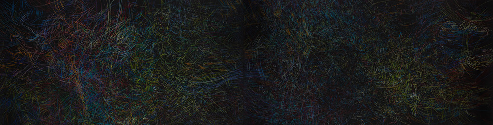
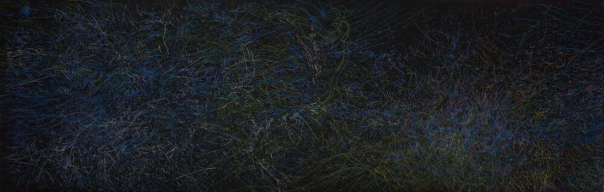

Silvia Rubinson
Cada una de las instancias, o estaciones, del nocturnal, frondoso vergel que Silvia Rubinson urde con verdadera pasión morfológica y un perfecto equilibrio entre lo expresivo y lo mesurado, tiene la llamativa cualidad de conservar un enorme grado de familiaridad con las otras, y a la vez de ser notablemente diferente. (...)
Eduardo Stupía

100 x 70 cm
2018
Selección Premio Itaú


100 x 400 cm
2018

64 x 400 cm
2018